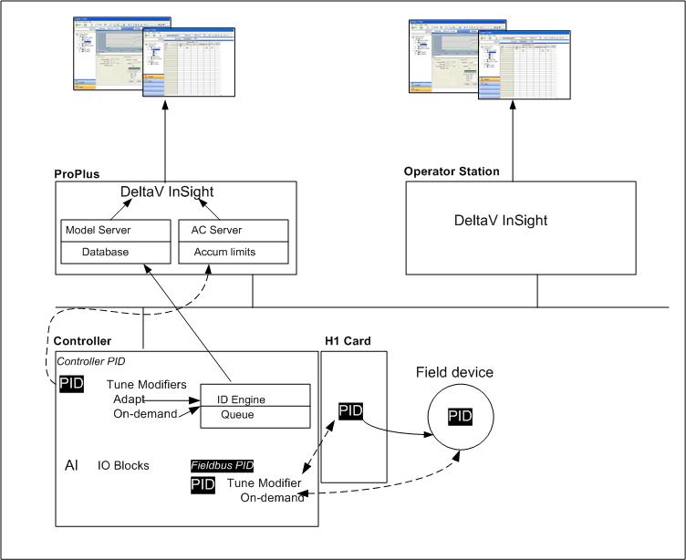

DeltaV InSight
DeltaV InSight is a suite of tools that support a systematic approach to improving control by monitoring control performance, identifying and diagnosing problem loops, recommending tuning and maintenance improvements, and continuously adapting to changing conditions to optimize plant performance.
When Process Learning is enabled on PID blocks, process models are automatically identified based on day-to-day operations. These models are then used in InSight to provide PID tuning recommendations and to continuously evaluate plant performance and associated controller tuning. By embedding learning algorithms directly into the control system, InSight:
- Locates hidden variability and underperforming control loops
- Monitors control performance and loop operation
- Enables Adaptive Control
- Defines process models across the plant
- Evaluates controller tuning
- Delivers tuning recommendations
As a result, it may be possible to improve quality and increase throughput by reducing process variability.
Process Learning can be enabled on:
- PID blocks running in the controller
- PID blocks assigned to an H1 card
- PID blocks running in devices
- FFPID_RMT blocks running in devices
DeltaV InSight comprises the following system components:
- Input/Output and Control blocks' embedded capability to support the calculation of variability, detect oscillating loops, and automatically report abnormal conditions detected by the block.
- PID Function Block Modifier that extends the functionality of the standard PID function block to enable On-Demand and Adaptive Tuning, and support performance monitoring and diagnostics reported by the block. A PID function block must be licensed for Adaptive Control.
- InSight application that enables monitoring of loop operation and tuning and process model development. Navigation Panes are provided for the two basic features that make up DeltaV InSight :
- Inspect - for performance monitoring and control tuning evaluation
- Tune - for accessing and working with On-Demand and Adaptive Tuning recommendation and loop tuning evaluation
Licensing for Adaptive Control
With the exception of closed loop Adaptive Control, all InSight functionality is available with a DeltaV InSight system license assigned to the ProfessionalPLUS workstation. Refer to the DeltaV Explorer online help for information on how to load license files. Contact your Emerson representative for sizing information for InSight system licenses.
To enable closed loop Adaptive Control, separate DeltaV Adapt Function Block license bundles must also be assigned to the ProfessionalPLUS workstation and then assigned to FLC and PID blocks running in the controller. PID blocks running in the H1 card and in fieldbus devices cannot be licensed for closed loop Adaptive Control. The DeltaV Adapt Function Block license bundles stipulate the number of blocks that can be licensed for closed loop Adaptive Control: DeltaV Adapt 1 Function Block, DeltaV Adapt 10 Function Block, and DeltaV Adapt 100 Function Block.
Assigning Adapt Function Block License Bundles to the ProfessionalPLUS Workstation
Follow these steps to assign DeltaV Adapt 1, 10, or 100 Function Block License bundles to the ProfessionalPLUS workstation.
- Select a DeltaV Adapt Function Block License bundle or multiple bundles and drag them to the ProfessionalPLUS workstation. The license bundles are sized for 1, 10, and 100 blocks. Assign any combination of license bundles to equal the number of blocks that will be used for Adaptive Control. For example to license 21 blocks, assign two DeltaV Adapt 10 Function Block licenses and one DeltaV Adapt 1 Function Block license.
Another way to assign DeltaV Adapt Function Block licenses is to select the ProfessionalPLUS workstation and select from the context menu.
Assigning an Adapt License to a PID Block in Non Class-Based Modules
Adapt license can be assigned to PID blocks in modules that are not class-based and to PID blocks in class-based modules.
Follow these steps to assign an Adapt license to a PID block in a non-class based module.
Assigning an Adapt License to a PID Block in Class-Based Modules
For class-based modules, you must first expose the ENABLE_LEARNING parameter to configure process learning and then assign an Adapt license to PID blocks in instances of that class. By default, the ENABLE_LEARNING parameter is not exposed on module classes.
- Select the Parameters tab.
- Click the Add button, and then browse to the PID block's ENABLE_LEARNING parameter.
- Select the ENABLE_LEARNING parameter, and then click OK in the Browse dialog to add ENABLE_LEARNING to the module class.
When the ENABLE_LEARNING parameter has been exposed for configuration in a module class, you can enable or disable learning for module instances based on the class and assign or unassign licenses to PID blocks in module instances based on that class.
Adapt licenses are assigned to PID blocks in class-based modules in the same way as non class-based modules: select the PID block in the DeltaV Explorer, and then select .
In the following sections, the DeltaV InSight topics provide a description of the algorithms used by InSight. Also, provided is information on how to use the InSight applications for tuning and performance monitoring. Application examples are provided for both applications. Understanding the details of the InSight algorithms is not necessary to successfully use InSight. Unless you have an interest in how the InSight algorithms operate and how they are implemented, go directly to the DeltaV InSight topics.
DeltaV InSight Overview
The InSight applications enable you to examine abnormal operating conditions that have been detected by I/O and Control blocks and access the recommended tuning and associated process models that are developed on demand or automatically during normal plant operation. The time-critical process identification and adjustment of tuning functions are performed through the use of block modifiers that execute with the PID function block and operate independently of the InSight application. This approach allows the process dynamics to be precisely captured without introducing errors from communication delays. InSight can be used to view the model identification and tuning performed by the function block. The following image shows the DeltaV InSight architecture.
